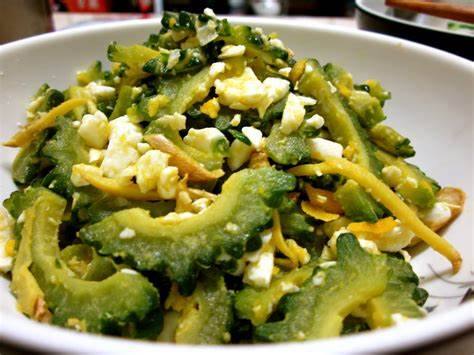
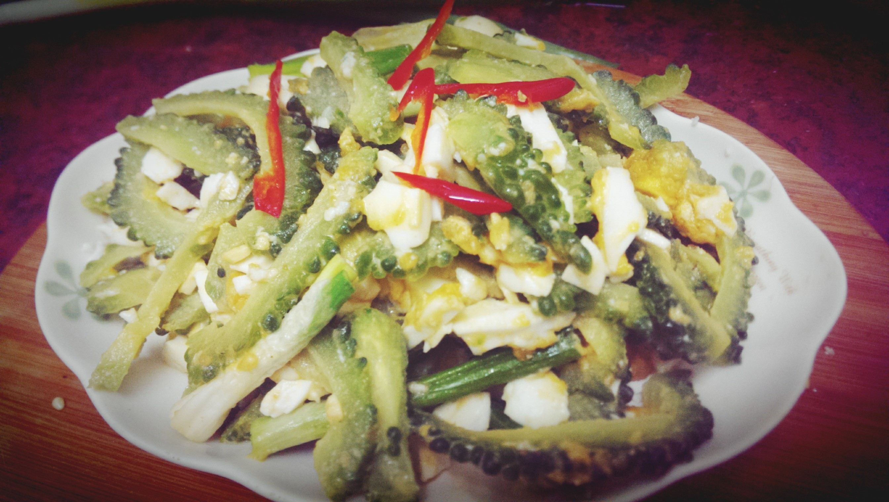
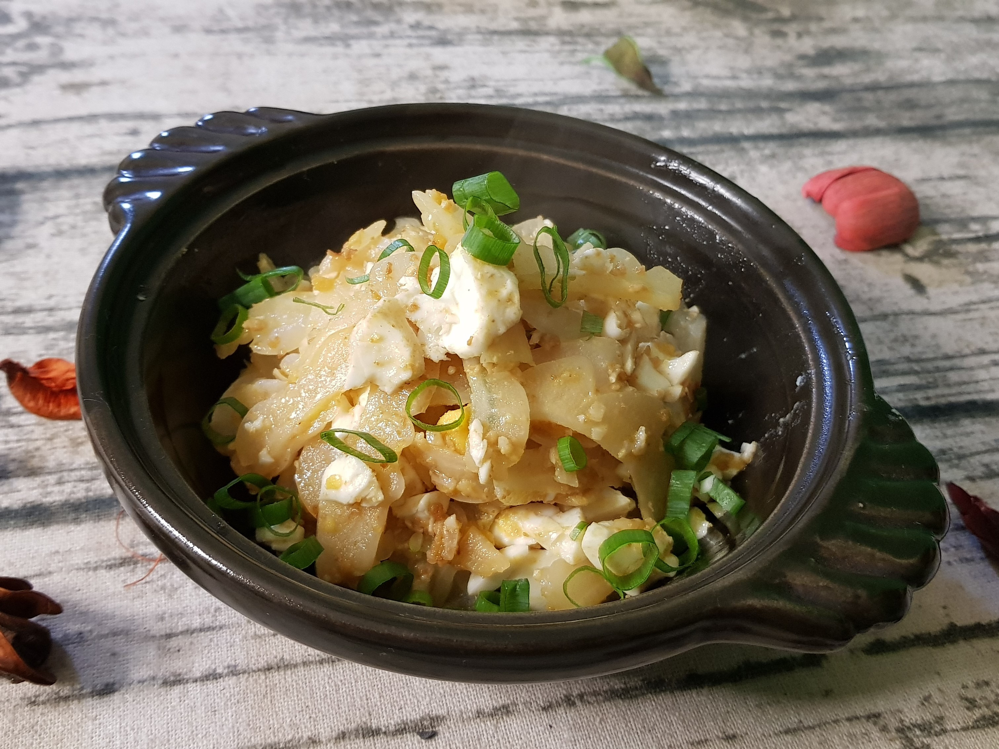

苦瓜洗淨去籽切約0.5cm的薄片~鹹蛋去殼切碎..蒜頭'辣椒'蔥切末備用~
苦瓜過水汆燙約八分熟後撈起瀝乾備用~
起油鍋.. 先爆香蒜末~
接著放入鹹蛋..以鍋鏟將鹹蛋黃搗碎...(鹹蛋黃搗碎後炒散..香氣更好)
待鹹蛋黃出現濃厚的泡沫時... 可加入辣椒末一起炒香~
接著..再倒入瀝乾水分的苦瓜片拌炒均勻~
鹹蛋鹹度大不相同,可吃吃看.. 視情況酌量添加入醬油少許(醬油可提香.. 少量鹽亦可)再加入少許糖調味..
拌炒均勻後.. 淋下少許米酒.. 香油..白胡椒粉提味~再撒下蔥花適量拌勻即可盛盤。   
練習 影片 音樂